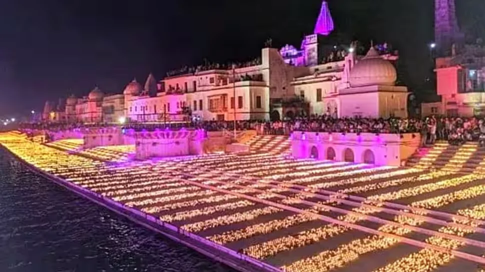
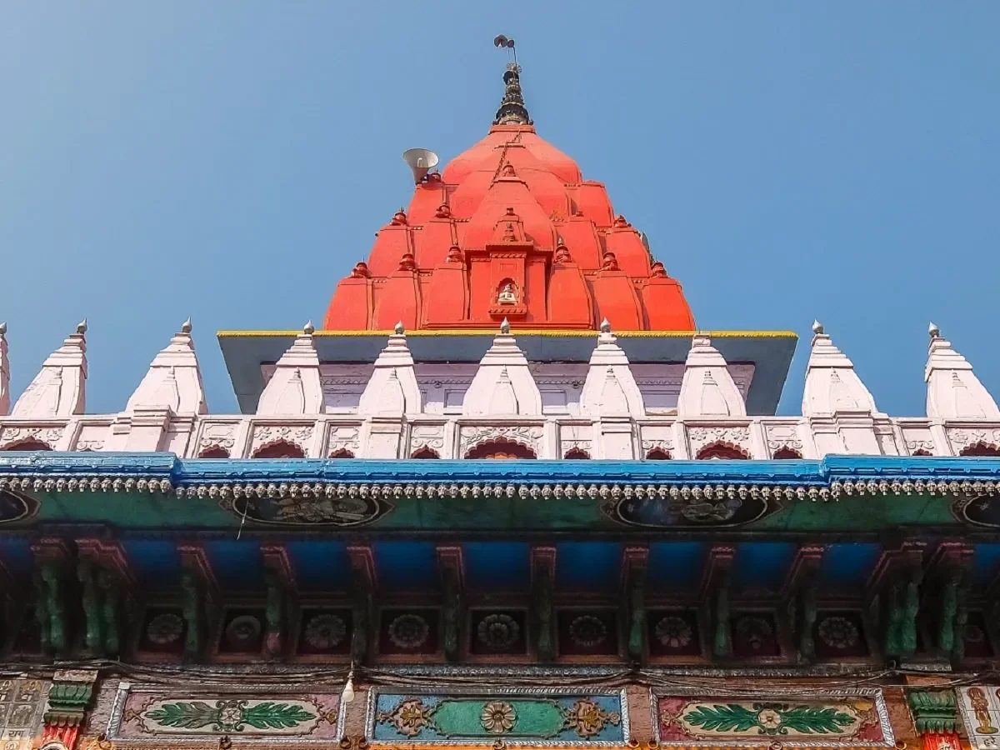
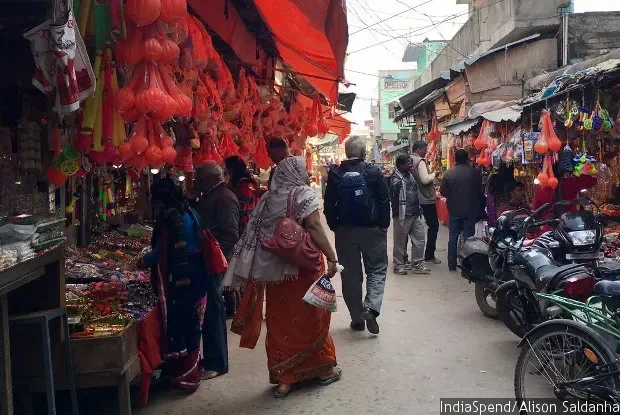
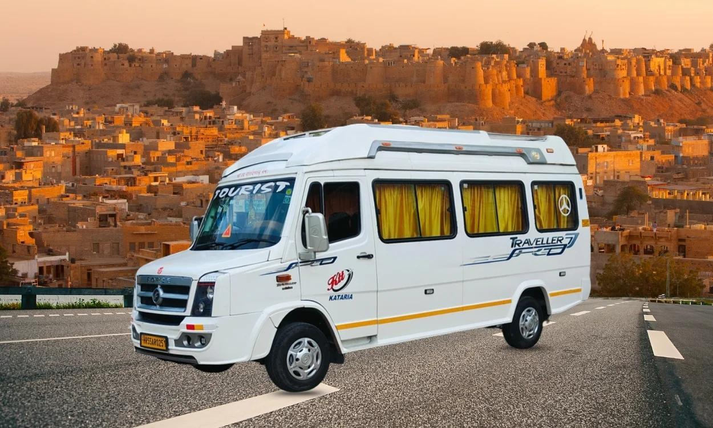

श्री राम मंदिर आज की अयोध्या के तीर्थ-स्वरूप को पहचान देता है।
Spiritual Heritage Guide
प्राचीन अयोध्या: इतिहास, पुरातत्व और आध्यात्मिक विरासत
अयोध्या को केवल मंदिरों की सूची से नहीं समझा जा सकता। इसे समझने के लिए सरयू के किनारे सुबह की शांति, गलियों की घंटियां, स्थानीय कथाएं और यात्रियों की आस्था को साथ पढ़ना पड़ता है।
यह चित्र लेख का मुख्य भाव तय करता है: आज की भव्य अयोध्या पुराने पवित्र स्मृति-स्थलों, आस्था और मंदिर परंपरा पर खड़ी है।
परिचय: अयोध्या एक जीवित विरासत है
अयोध्या, जिसे पुराने ग्रंथों में साकेत भी कहा गया है, समय की परतों को सामने ला देती है। सुबह घाटों पर दीप, फूल और मंत्रों की ध्वनि मिलती है; दोपहर तक वही गलियां प्रसाद, चाय, मार्गदर्शक, सुरक्षा व्यवस्था और परिवारों की यात्रा से भर जाती हैं।
इसलिए अयोध्या को समझने के लिए इतिहास और तीर्थयात्रा को अलग-अलग नहीं करना चाहिए। यहां पुरातत्व, मंदिर स्थापत्य, सरयू की परंपरा, लोककथा और रोज़मर्रा की श्रद्धा एक ही अनुभव में मिलते हैं।

सरयू तट अयोध्या की आध्यात्मिक लय को सबसे साफ दिखाता है।
सरयू केवल नदी नहीं है; यह अयोध्या की पूजा, स्नान, आरती और शांत बैठने की परंपरा का केंद्र है। पहली बार आने वाले यात्री यहां से शहर की आत्मा महसूस करते हैं।
ऐतिहासिक पृष्ठभूमि: साकेत से रामनगरी तक
अयोध्या का नाम भारतीय स्मृति में कोशल, भगवान राम और धर्मनिष्ठ राजधर्म से जुड़ा है। साकेत नाम इसके प्राचीन नगर-स्वरूप की ओर संकेत करता है। स्थानीय गाइड इसे राम जन्मभूमि, हनुमान गढ़ी, कनक भवन, दशरथ महल और सरयू घाटों के माध्यम से समझाते हैं, जबकि इतिहासकार इन्हें बस्ती, पूजा और स्मृति के संकेतों की तरह पढ़ते हैं।
साकेत की कल्पना नदी, मार्ग और पवित्र स्थलों से जुड़ी हुई है।
मानचित्र इस हिस्से में इसलिए जरूरी है क्योंकि अयोध्या का इतिहास केवल तारीखों में नहीं, बल्कि भूगोल में भी छिपा है। सरयू, मंदिर समूह और यात्रापथ मिलकर शहर का प्राचीन महत्व बनाते हैं।
पुरातत्व: आस्था के नीचे बसी परतें
अयोध्या में पुरातत्व संवेदनशील विषय है क्योंकि यह शहर आज भी आबाद और पूजित है। मिट्टी के बर्तन, ईंटों के अवशेष, स्थापत्य संकेत और बसावट की परतें यह बताती हैं कि यह क्षेत्र लंबे समय तक मानवीय गतिविधि का केंद्र रहा है।
पुरातत्व हमें यह सिखाता है कि आस्था और प्रमाण दोनों को सम्मान से पढ़ना चाहिए। आस्था बताती है कि स्थान क्यों प्रिय है, और पुरातत्व बताता है कि जमीन में क्या दिखाई देता है।
पुरातत्व अयोध्या को परतों, अवशेषों और संदर्भ के साथ पढ़ता है।
यह चित्र पुरातत्व अनुभाग से जुड़ा है क्योंकि यह बताता है कि पुराने निवास, बाद के निर्माण और आधुनिक गतिविधियां एक ही जमीन पर परतों की तरह मौजूद हो सकती हैं।
मंदिर स्थापत्य: भीड़ से आगे क्या देखें
राम मंदिर का शिखर, मंडप, स्तंभ और नक्काशी भक्ति को स्थापत्य में बदलते हैं। हनुमान गढ़ी का ऊंचा प्रवेश और सीढ़ियां अलग अनुभव देती हैं; यह मंदिर अयोध्या के रक्षक-भाव से जुड़ा माना जाता है।

हनुमान गढ़ी अयोध्या के सबसे अधिक देखे जाने वाले मंदिरों में से एक है।
कई यात्री राम मंदिर से पहले हनुमान गढ़ी जाते हैं। सीढ़ियां, ऊंचाई और प्रवेश का क्रम इसे शहर का आध्यात्मिक द्वार जैसा अनुभव देते हैं।
लोककथा और स्थानीय कथा
अयोध्या की कथाएं किताबों में बंद नहीं हैं। कनक भवन को माता सीता और भगवान राम की स्मृतियों से जोड़ा जाता है। स्थानीय लोग इसे केवल भवन नहीं, बल्कि प्रेम, उपहार और राजसी भक्ति की कथा की तरह बताते हैं।
कनक भवन सीता-राम की कोमल लोकस्मृति से जुड़ा है।
यह चित्र कथा अनुभाग में इसलिए रखा गया है क्योंकि कनक भवन का महत्व केवल स्थापत्य नहीं, बल्कि उस भावुक स्थानीय स्मृति में है जिसे परिवार और गाइड आज भी सुनाते हैं।
यात्रा अनुभव और राम की पैड़ी
अयोध्या की यात्रा सुबह जल्दी शुरू करें। राम की पैड़ी पर कुछ देर रुककर पानी, दीप, मंत्र, दुकानों और यात्रियों की आवाजाही को देखें। यहीं शहर पवित्र और सार्वजनिक दोनों रूपों में दिखाई देता है।
राम की पैड़ी शाम की रोशनी और आरती में सबसे यादगार लगती है।
यह दृश्य यात्रा अनुभव से जुड़ा है क्योंकि राम की पैड़ी केवल फोटो पॉइंट नहीं है। यहां यात्री अयोध्या की शाम, नदी और सामूहिक भक्ति को साथ महसूस करते हैं।
यात्री गाइड: व्यावहारिक सलाह
अक्टूबर से मार्च तक मौसम सबसे आरामदायक रहता है। मंदिरों के लिए सादे कपड़े, पानी, पहचान पत्र और आरामदायक जूते रखें। त्योहारों में होटल और कैब पहले से बुक करें।

अयोध्या के बाजार यात्रियों की वास्तविक जरूरतों से जुड़े हैं।
प्रसाद, फूल, नाश्ता, दिशा और छोटे विराम इन्हीं गलियों में मिलते हैं। इसलिए बाजार भी तीर्थयात्रा का व्यावहारिक हिस्सा है।
सामान्य प्रश्न
क्या अयोध्या एक दिन में देखी जा सकती है?
मुख्य मंदिर एक दिन में देखे जा सकते हैं, लेकिन इतिहास, घाट, बाजार और आरती को शांति से समझने के लिए दो दिन बेहतर हैं।
अयोध्या के साथ कौन से शहर जोड़े जा सकते हैं?
काशी, प्रयागराज और नैमिषारण्य अयोध्या के साथ अच्छे आध्यात्मिक सर्किट बनाते हैं।
स्थानीय टीम के साथ अयोध्या प्लान करें
कैब, होटल, दर्शन क्रम और समय की योजना सही हो तो अयोध्या की यात्रा ज्यादा शांत और अर्थपूर्ण बनती है।

परिवार और समूह यात्रा के लिए आरामदायक वाहन जरूरी है।
वाहन का चयन इसलिए महत्वपूर्ण है क्योंकि बुजुर्गों, बच्चों और समूहों के साथ मंदिरों के बीच आराम से चलना यात्रा को तनावमुक्त बनाता है।
Shri Ram Mandir now anchors Ayodhya's modern pilgrimage skyline.
Spiritual Heritage Guide
Ancient Ayodhya: History, Archaeology and Spiritual Heritage
Ayodhya is not a city you understand from a checklist. You understand it by standing near the Saryu before sunrise, listening to bells from different lanes, and noticing how old stories still guide modern footsteps.
The hero image sets the article's main frame: Ayodhya as a modern pilgrimage centre built on older sacred memory. It prepares the reader to see the city through architecture, ritual, history and living travel experience together.
Introduction: Ayodhya Is A Living Archive
Ayodhya, often spoken of as Ram Janmabhoomi and remembered in older literature as Saket, has a rare habit of making time feel visible. In the morning, the ghats are washed, brass lamps are arranged, tea sellers open their kettles, and pilgrims move quietly toward darshan. By afternoon the same lanes become a working town of flower baskets, prasad shops, guides, police barricades, temple bells, cycle rickshaws and families asking for the shortest route to Hanuman Garhi.
That is why a serious guide to Ancient Ayodhya should not separate history from pilgrimage. The city has inscriptions, pottery traditions, sacred geography, architecture and archaeological debates. It also has old women who still tell children why the Saryu should be greeted with folded hands, priests who remember the rhythm of older festivals, and shopkeepers who can point out the turn where a procession usually slows down.
This article is written for travellers who want more than a quick darshan. If you are planning an Ayodhya tour package, a family pilgrimage, or a wider spiritual circuit with Kashi, Prayagraj and Naimisharanya, understanding the heritage of Ayodhya will make your journey richer. You will know why the city is sacred, how its spaces developed, what to notice in its temples, and how to move through it with respect.
Saryu riverfront rituals give Ayodhya its most recognisable spiritual rhythm.
The Saryu is not just a scenic edge of Ayodhya. Pilgrims come here for aarti, ritual bathing, quiet prayer and evening walks, so the riverfront becomes the natural starting point for understanding the city's living devotion.
Historical Background: From Saket To Ramnagri
The name Ayodhya carries a powerful meaning in the Indian imagination. It is associated with the kingdom of Kosala, the story of Lord Rama, and the idea of a city shaped by dharma. Ancient literary traditions remember it as a royal capital, while Buddhist, Jain and later Hindu traditions also place the region inside a wider sacred landscape. The older name Saket appears in classical references and is often used by historians when discussing the early urban identity of the city.
To walk in Ayodhya today is to feel how many ages have spoken through the same place. Epic memory gives the city its emotional force. Later religious movements gave it temples, akharas, mathas, pilgrimage routes and ritual calendars. Medieval and early modern patronage shaped shrines, gateways, ghats and neighbourhoods. Modern developments have widened roads, organised darshan movement, improved lighting and brought a new scale of visitor flow.
A local guide will often explain Ayodhya through points rather than periods: Ram Janmabhoomi, Hanuman Garhi, Kanak Bhawan, Dashrath Mahal, Nageshwarnath, Ram Ki Paidi and the Saryu. A historian reads these places differently, as markers of worship, settlement and memory. Both readings are useful. The pilgrim sees devotion. The historian sees continuity and change. Ayodhya needs both eyes.
The city's geography matters as much as its texts. The Saryu river gave Ayodhya ritual centrality, water, movement, trade routes and a boundary of sacred imagination. Many old cities survive because a river keeps them useful. In Ayodhya, the river also keeps them holy. Even today, the most meaningful visits often begin or end by the water.
Ancient Saket is best understood as a sacred city shaped by river, routes and remembered places.
A map belongs in the historical section because Ayodhya's story is also spatial. The old name Saket, the Saryu river, temple clusters and pilgrimage movement all help explain why the city remained important across generations.
Archaeological Perspective: Reading The Layers Under The Faith
Archaeology in Ayodhya is sensitive because the city is deeply sacred and continuously inhabited. Unlike an abandoned ruin where trenches can be opened freely, Ayodhya is full of shrines, homes, markets, security zones and pilgrims. That means every archaeological claim must be handled carefully, with attention to evidence, context and method.
The broader region has yielded material traces such as pottery, structural remains, terracotta pieces, brickwork and settlement layers. Archaeologists study these not as isolated objects but as part of a sequence. A pottery style can suggest a cultural phase. A brick size can hint at construction habits. A foundation can show rebuilding. A disturbed layer can warn researchers that later activity has mixed the record.
For visitors, the key lesson is simple: Ayodhya's antiquity is not only in one monument. It is spread across the terrain. Older mounds, temple clusters, riverfront patterns and inherited pilgrimage routes all help explain why the city remained important. When you hear the word "archaeology", do not imagine only dramatic discoveries. Think also of small things: a reused stone, an old platform, a lane that bends around an older sacred point, or a shrine whose present walls are new but whose worship memory is old.
A heritage traveller should also understand the difference between faith memory and material evidence. Faith tells why a place matters. Archaeology tells what can be observed, dated and compared. In Ayodhya, the two do not need to fight inside the traveller's mind. They can sit side by side, as long as each is respected for what it can and cannot prove.
Archaeology reads Ayodhya through layers, material traces and careful context.
This illustration supports the archaeology section because it points to the idea of stratigraphy: older occupation, later rebuilding and modern activity sitting over one another. That layered reading is essential in a living city where devotion and settlement history share the same ground.
Temple Architecture: What To Notice Beyond The Crowd
Most visitors arrive with one main goal: Ram Mandir darshan. That is natural. But if you slow down, Ayodhya becomes an open lesson in North Indian temple architecture. You begin to notice plinths, mandapas, shikharas, carved pillars, doorway frames, circumambulation paths, bells, flags and the way a temple controls movement from street to sanctum.
At Shri Ram Mandir, the scale is the first thing people feel. The stone, symmetry and carved surfaces give the temple a ceremonial presence. The architecture is meant to create a gradual emotional rise: approach, queue, threshold, darshan and exit. Even when the crowd is heavy, the building communicates order. Look at the vertical pull of the shikhara, the rhythm of pillars, and the way ornament is used to turn stone into devotion.
Hanuman Garhi teaches a different architectural lesson. It is not only a temple but a fortified sacred complex. The climb, the gateway and the elevated position all create a sense of protection. Many local pilgrims visit Hanuman Garhi before Ram Mandir, and that sequence itself has become part of Ayodhya's lived ritual map.
Kanak Bhawan, associated in local belief with Sita and Rama, feels more intimate. Its courtyards, painted surfaces and domestic mood tell a softer story. Dashrath Mahal carries the memory of royalty and procession. Nageshwarnath Temple connects Ayodhya's Shaiva tradition with the broader sacred landscape. Together these places show that Ayodhya is not a single-shrine city. It is a network of sacred addresses.
Hanuman Garhi is one of the most visited temples in Ayodhya.
This temple belongs in the architecture section because its raised approach, gateway-like entry and compact sacred precinct create a strong sense of movement from street to shrine. Many pilgrims visit Hanuman Garhi before Ram Mandir, treating it as a spiritual gateway into Ramnagri.
Legends And Local Katha: The Stories People Still Carry
In Ayodhya, stories are not locked inside books. They are spoken while walking. A guide may point toward Kanak Bhawan and narrate how it is remembered as a palace gift for Sita. A priest near Hanuman Garhi may explain why Hanuman is treated as the guardian of Ramnagri. A boatman near the Saryu may tell you that the river remembers every pilgrim who comes with a clean heart.
These local kathas matter because they explain behaviour. They tell you why pilgrims fold hands before entering a lane, why some families keep a particular order of darshan, why Ram Navami feels different from an ordinary day, and why Deepotsav has become not only a festival but a public expression of identity.
One common local feeling is that Ayodhya should be approached with patience. People say, "Ramnagri mein jaldi nahi hoti" - in the city of Rama, one should not rush. This is practical advice too. The most peaceful travellers are the ones who leave room for queues, closed routes, sudden processions, elderly family members and the simple desire to sit quietly after darshan.
Legends do not need to be treated as tour facts in the modern sense. They are cultural memory. They show how people have loved a place for generations. When a visitor listens without interrupting, Ayodhya opens more gently.
Kanak Bhawan is remembered locally through stories of Sita, Rama and royal devotion.
Kanak Bhawan fits the legends and katha section because people do not visit it only for architecture. They visit for the tender local memory attached to Sita and Rama, and that emotional storytelling gives the temple its palace-like devotional character.
Cultural Traditions: A City Of Aarti, Parikrama And Festival Light
Ayodhya's culture follows a devotional calendar. Ram Navami, Kartik Purnima, Diwali, Deepotsav, Vivah Panchami and many local observances change the rhythm of the town. Hotels fill faster, traffic diversions become stricter, and the ghats glow with a different energy. If you are planning a festival trip, book early and keep the schedule flexible.
The Saryu Aarti is one of the most accessible cultural experiences for travellers. Arrive before sunset, choose a respectful place to stand or sit, and watch how the riverfront gathers people from many backgrounds. Some come with cameras. Some come with offerings. Some simply watch. The lamps, chants and river breeze create the kind of memory that stays longer than a photograph.
Parikrama traditions also shape Ayodhya. Depending on the route and occasion, pilgrims walk sacred circuits that connect temples, ghats and older religious points. Even if you do not walk a full parikrama, understanding the idea helps you see why movement is so important here. Ayodhya is not only visited. It is circled, approached, returned to and remembered in steps.
Food and markets are part of the cultural experience too. Morning tea near the temple lanes, simple sattvik meals, peda, kachori, seasonal sweets and prasad shops all carry the flavour of a pilgrimage town. Keep expectations realistic: festival days are crowded, service may be slow, and the best local experiences often come from small, ordinary places rather than polished restaurants.
Travel Experience: How Ayodhya Feels On The Ground
A good Ayodhya day starts early. Before the sun gets sharp, the lanes are easier, the ghats are calmer and the first wave of pilgrims moves with a soft focus. If you are travelling with parents or children, this is the best time for the riverfront and outer temple photography. Later in the day, keep your energy for darshan queues and short transfers.
Ram Ki Paidi is best experienced slowly. Stand for a few minutes before taking photographs. Watch the steps, the water, the lamps, the priests, the families and the police managing movement. This is where Ayodhya feels both sacred and civic. It is a public space, a ritual space and a travel landmark at the same time.
The temple lanes can feel intense for first-time visitors. There are security checks, shop calls, prasad sellers, route barricades and many people asking for directions. A local driver or guide saves time here, especially if you are combining Ram Mandir, Hanuman Garhi, Kanak Bhawan and Saryu Aarti in one day. For a smoother visit, use a planned Ayodhya cab service or ask our team through the contact page.
If you want the heritage side, add pauses. Do not simply jump from one temple to another. Stop near older gateways. Look at stone details. Ask why a shrine is placed where it is. Notice how devotional shops cluster near temple entrances. These small observations turn sightseeing into understanding.
Ram Ki Paidi becomes especially memorable when lamps, water and temple sound meet in the evening.
This image supports the travel experience section because Ram Ki Paidi is where many visitors feel Ayodhya most directly. It is not only a photo stop; it is a place to watch evening movement, public devotion and the riverfront atmosphere that shapes the pilgrimage day.
Pilgrim Guide: Practical Planning For A Meaningful Visit
Best Time To Visit
October to March is the most comfortable season for most families. Summer can be hot, especially for elderly pilgrims. Festival periods are powerful but crowded, so they require advance hotel and cab planning. If your main goal is peaceful darshan, avoid peak festival dates. If your main goal is cultural experience, festivals are unforgettable.
Suggested Two Day Heritage Plan
Day one can focus on Ram Mandir, Hanuman Garhi, Kanak Bhawan, Dashrath Mahal and Saryu Aarti. Keep the afternoon lighter, because queues and walking can tire families. Day two can include Nageshwarnath Temple, local markets, Ram Ki Paidi in morning light, a slower heritage walk and optional add-ons depending on your interest.
What To Carry
Carry a valid ID, comfortable footwear, a water bottle, light cotton clothing in warm months, modest temple-friendly clothes, basic medicines and a small bag. Keep valuables limited. During security checks, follow local instructions calmly. Photography rules may vary around sensitive temple zones, so always check before taking pictures.
Ayodhya's market lanes help pilgrims find prasad, flowers, food and small travel essentials.
A local market image belongs in the pilgrim guide because practical travel happens in these lanes. Families buy offerings, pause for tea, ask directions and adjust their darshan plan here, so the market is part of the real pilgrimage experience.
How To Connect Ayodhya With Other Sacred Cities
Ayodhya connects beautifully with Kashi tour packages for Ganga Aarti and Vishwanath darshan, with Prayagraj tours for Triveni Sangam, and with Naimisharanya tours for forest-based spiritual heritage. Many families prefer a 4 to 6 day circuit because it balances darshan, rest and road travel.
Did You Know? Heritage Facts About Ayodhya
Ayodhya is closely associated with the ancient region of Kosala and is remembered in many traditions as a royal and sacred city.
Saket is an older name used in literary and historical discussions of the city.
The Saryu river is central to Ayodhya's ritual geography, not just its physical landscape.
Hanuman Garhi is often visited before Ram Mandir by many pilgrims because of Hanuman's guardian role in local belief.
Kanak Bhawan is loved for its intimate devotional mood and its association with Sita and Rama.
Ayodhya's heritage is spread across temples, ghats, lanes, markets, oral stories and seasonal processions.
Festival days change the city completely, especially during Ram Navami, Diwali and Deepotsav.
FAQ: Ancient Ayodhya, Heritage And Travel
Why is Ayodhya important for history and archaeology?
Ayodhya is important because it combines textual memory, continuous pilgrimage, settlement layers, temple traditions and riverfront sacred geography. Archaeology helps explain the material history behind a city that is still actively lived in and worshipped.
What is the difference between Ayodhya and Saket?
Saket is an older name associated with the city in classical references. Ayodhya is the name most pilgrims use today, especially in connection with Lord Rama and Ramnagri identity.
Can I cover Ayodhya heritage sites in one day?
You can cover the main temples in one day, but two days are better if you want Saryu Aarti, markets, architecture, slower darshan and a more meaningful heritage walk.
Which places should be included in an Ayodhya heritage tour?
Include Shri Ram Mandir, Hanuman Garhi, Kanak Bhawan, Dashrath Mahal, Nageshwarnath Temple, Ram Ki Paidi, Saryu ghats and nearby market lanes.
How can I plan Ayodhya with Kashi and Prayagraj?
A practical route is Ayodhya to Prayagraj to Kashi, or Ayodhya to Kashi with Prayagraj as an add-on. A private cab makes the circuit easier for families and senior citizens.
Related Tours For Heritage Travellers
Ayodhya Tour Package
Ram Mandir, Hanuman Garhi, Kanak Bhawan, Saryu Aarti, cab and hotel support.
Ayodhya is easier when your route, darshan timing, cab movement and hotel location are planned by people who know the ground. Tell us your travel date, group size and priorities, and we will suggest a practical heritage-focused itinerary.
Comfortable vehicles make multi-temple Ayodhya visits easier for families and groups.
The vehicle image belongs in the CTA because planning is not only about places. For families, senior citizens and groups, a reliable cab or tempo traveller decides whether the day feels rushed or peaceful.